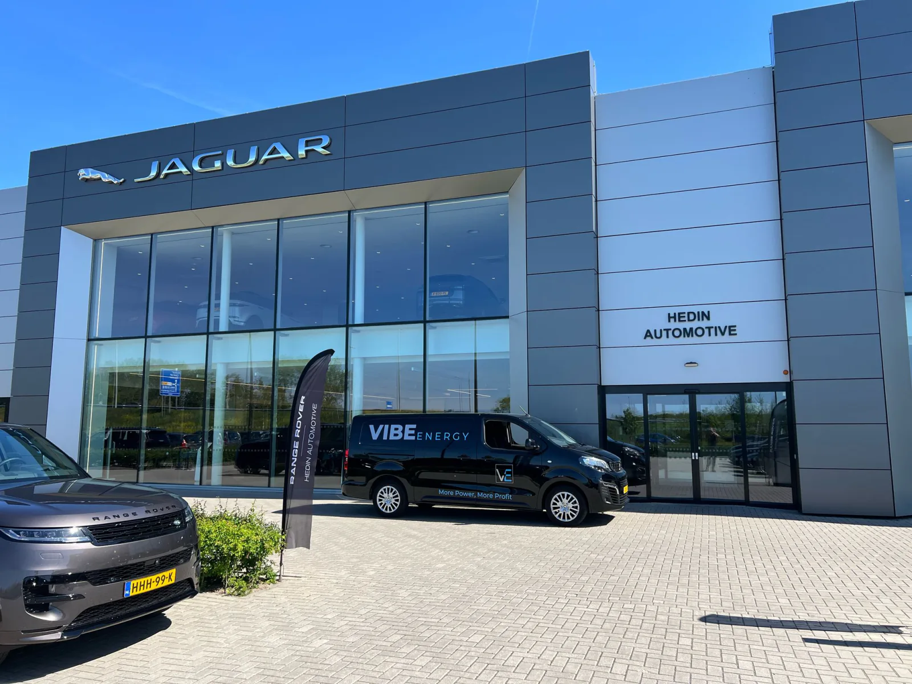
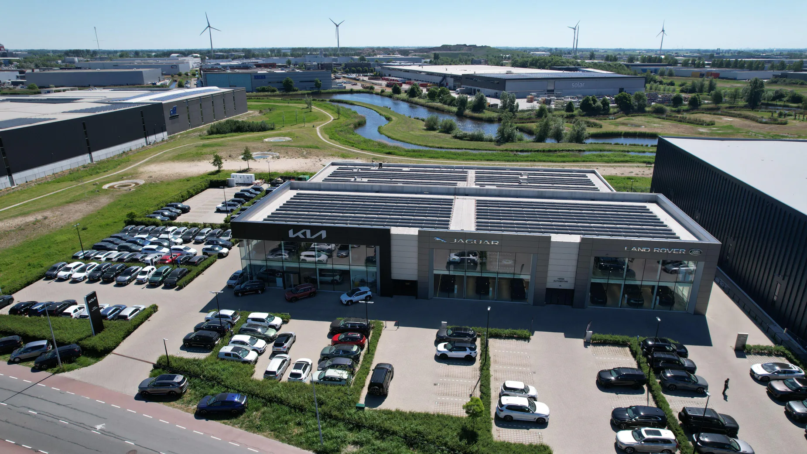

Een dak levert pas rendement als de opwek ook benut wordt.
Panelen leggen is het makkelijke deel. De waarde ontstaat pas wanneer de opgewekte stroom op uw eigen locatie landt — teruglevering levert immers steeds minder op. Daarom ontwerpen we de opstelling op uw verbruik en brengen we opwek, opslag en verbruik onder één sturing.
Het dak ligt er al. De opbrengst landt alleen zelden waar hij hoort.
Opwek en verbruik vallen op een bedrijfslocatie zelden samen. Precies daar lekt het rendement van een zonnedak weg.
Teruglevering loopt terug
Wat u niet zelf gebruikt, gaat het net op tegen een vergoeding die steeds verder terugloopt. Dezelfde kWh is op uw eigen locatie meer waard.
De zon schijnt niet op uw piek
De opwek piekt midden op de dag, terwijl het pand, het proces en de laadpunten hun vermogen op heel andere momenten vragen. Zonder buffer verdwijnt dat verschil.
Het dak wordt volgelegd in plaats van ontworpen
Een opstelling die alleen op het maximale aantal panelen mikt, levert vooral meer momenten op waarop de opwek nergens heen kan.


Hoe dichter opwek en verbruik bij elkaar liggen, hoe minder er het terrein af hoeft.
Welke opstelling op uw locatie past, volgt uit het dak, de oriëntatie en wat er onder dat dak gebeurt.
Over energieopslagOpwek is pas iets waard als er iets onder staat dat hem opvangt.
Panelen zijn het zichtbare deel van de installatie, niet het hele verhaal. Wat een dak oplevert, hangt af van de last die er direct onder zit, van de buffer die het overschot vasthoudt en van de regelaar die per moment kiest waar de stroom heen gaat. Een zonnedak dat los staat van de rest van de installatie laat waarde liggen. Daarom tekenen wij de opwek, de opslag en de sturing op uw locatie als één systeem.
Van dak tot benutte kWh.
Opwek staat nooit op zichzelf. Elke opgewekte kWh gaat direct naar het pand, de opslag in, of — als restpost — het net op.
-
Opwek op het dak
Hoeveel er vrijkomt en op welk moment van de dag, volgt uit de opstelling en de oriëntatie.
-
Sturing weegt af
Per moment bepaalt de regelaar waar de opgewekte stroom het meest waard is.
-
Overschot naar opslag
Wat het pand op dat moment niet vraagt, gaat de batterij in in plaats van het net op.
-
Benut op de locatie
Gebouw, proces en laadpunten gebruiken de stroom op het moment dat ze erom vragen.
Teruglevering levert steeds minder op; eigen verbruik is waardevoller. Over de sturing
Plat dak, schuin dak, carport of veld.
De opstelling is een ontwerpkeuze, geen standaardpakket. Wat er ligt, wat het draagt en wat er onder gebeurt, bepaalt samen hoe het vermogen over de dag verdeeld raakt.
Plat dak
Hellingshoek en rijafstand bepalen hoe de opbrengst over de dag verdeeld wordt.
Schuin dak
Ligt vast in oriëntatie en vraagt daarom om een andere indeling.
Carport
Combineert opwek met overkapping, precies boven de plekken waar ook geladen wordt.
Veldopstelling
De uitweg waar het dak vol is of de constructie het gewicht niet draagt.
Welke het wordt, volgt uit het dak, de constructie en het verbruiksprofiel eronder — in die volgorde.

Dynamische vermogensregeling
Waar de aansluiting de begrenzing vormt, regelt het systeem het vermogen dynamisch terug in plaats van de installatie af te schakelen. Aan de Edisonweg in Purmerend is die regeling toegepast.
Daken die inmiddels draaien.
Gerealiseerde installaties, met de opgave zoals die is opgeleverd.

Edisonweg 16
216 zonnepanelen en 97,7 kW opgesteld vermogen, met dynamische vermogensregeling. Het energielabel ging 3 stappen vooruit.
Bekijk het project →
Schouwburgring
534 zonnepanelen boven 160 woningen, als één complex aangepakt.
Bekijk het project →
Van Beethovenstraat
302 zonnepanelen over 62 woningen, met energielabel +4.
Bekijk het project →Goed om te weten.
Hoeveel panelen passen er op ons dak?
Dat is niet de vraag waarmee wij beginnen. Eerst kijken we naar uw verbruiksprofiel en pas daarna naar wat het dak aankan. Een dak volleggen levert vooral meer momenten op waarop de opwek nergens heen kan.
Loont teruglevering nog?
Teruglevering levert steeds minder op, terwijl dezelfde kWh op uw eigen locatie zijn volle waarde houdt. Daarom richten wij het ontwerp op eigen verbruik en kijken we direct naar de rol die opslag daarin kan spelen.
Wat als de aansluiting de opwek begrenst?
Dan regelt het systeem het vermogen dynamisch terug in plaats van de installatie af te schakelen. Die dynamische vermogensregeling passen wij toe; aan de Edisonweg in Purmerend draait zij.
Welke opstelling is voor ons de juiste?
Plat dak, schuin dak, carport of veld — de keuze volgt uit de constructie, de oriëntatie en wat er onder het dak gebeurt. Bij een carport valt de opwek bijvoorbeeld samen met de plek waar ook geladen wordt.
Moeten wij zelf investeren?
Niet per se. Naast een reguliere koop is exploitatie mogelijk: Vibe investeert, bouwt en beheert de installatie, en u betaalt voor het gebruik ervan. Of dat in uw situatie uitkomt, beoordelen we per locatie.
Wat uw dak oplevert, hangt af van wat eronder gebeurt.
Stuur ons uw verbruiksgegevens en een beeld van het dak. Wij rekenen door welke opstelling past en hoeveel van de opwek u daadwerkelijk zelf gaat gebruiken.
Reactie binnen één werkdag. Vrijblijvend.